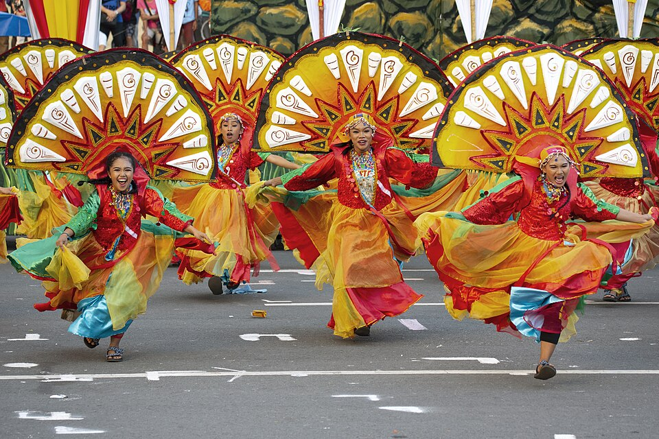

Binirayan Festival is the oldest and most significant festival in Antique. It commemorates the arrival of the ten Bornean datus who settled in Panay Island, marking an important part of local history.
The festival is celebrated in the capital town of San Jose de Buenavista and features street dancing, cultural performances, and historical reenactments.
It highlights the bravery, unity, and cultural identity of the people of Antique.

The festival showcases colorful street dances featuring traditional costumes inspired by early Malay settlers.
Cultural competitions, parades, and theatrical presentations recreate the historic events of the island’s early inhabitants.
It also includes community activities, food fairs, and exhibitions of local products.
Celebrated every December in San Jose de Buenavista.
Accessible via land transport within Antique.
Best experienced during main event days and street performances.